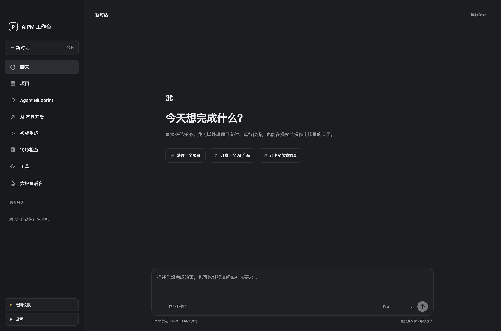
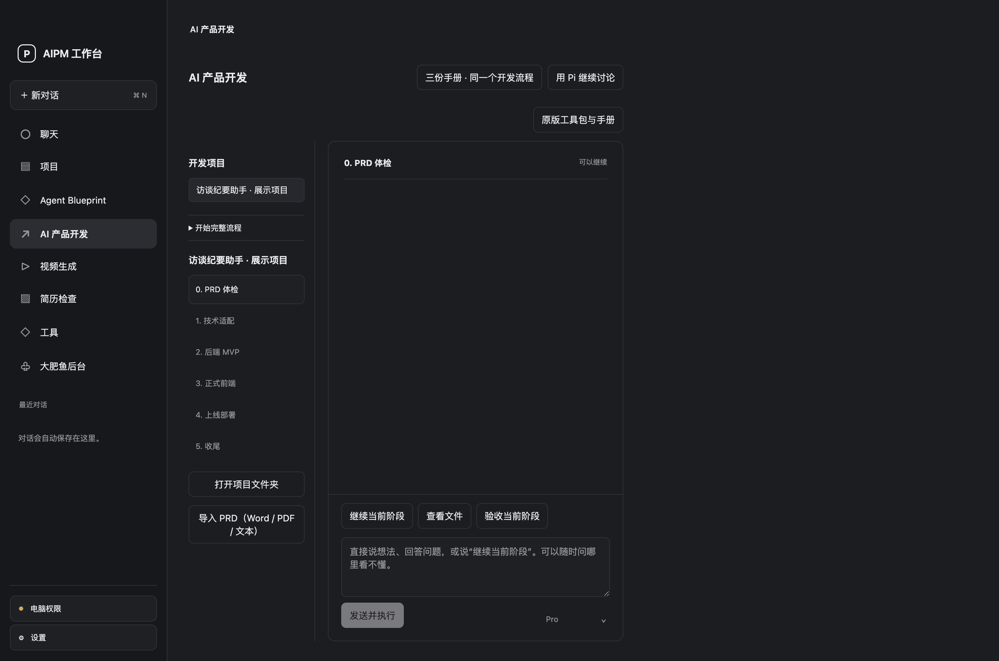

一套主要模型连接，
在各工作区继续用。
主聊天、开发、调研、视频等主要模块共用已保存的 API 配置。输入区直接切换 Flash / Pro，正在执行的任务保持启动时模型。
同一配置主聊天产品开发视频调研Flash / Pro ⌄
AN ORIGINAL PRODUCT BY ZHANG JUNHAO
面向 AI 产品经理的个人 AI Coding 与执行工作台。
从调研、PRD 到代码和成片，用对话推进任务，
直接读写文件、运行命令，并操作支持的桌面应用。

实际界面截图 · 独立演示工作区
产品想清楚之后，
还有一整段工作，可以继续交给 Agent。
WATCH THE WORK, NOT JUST THE ANSWER
选择一个场景，逐步查看任务如何执行。
验证回放来自既有记录，流程导览说明产品设计。
需求示意为整理产品方案、生成代码骨架，运行后再提出新需求。下面的 V2 与运行结果来自既有技术验收摘要。
A WORKBENCH FOR THE WHOLE PRODUCT TASK
八类核心工作区，一个云端扩展。
点击卡片，查看输入、执行方式和交付结果。
用对话提出需求 → 按项目继续推进 → 在工作台查看结果 → 核对后修改或导出
BUILT AROUND REAL TASKS
主聊天保持简洁，复杂任务进入专页。
截图来自独立演示工作区，可放大查看。
从想法或现有 PRD 开始，逐步核对需求、确定技术方案，推进后端、前端与部署准备。每个阶段都保留产物和未决问题。

实际界面 · 独立演示项目，未运行模型
LESS HANDOFF. MORE CONTINUITY.
围绕实际操作设计体验，
减少配置、找文件和重新交代背景的负担。
主聊天、开发、调研、视频等主要模块共用已保存的 API 配置。输入区直接切换 Flash / Pro，正在执行的任务保持启动时模型。
公司调研和视频各自绑定持久会话。补充材料、提出修改，继续在对应项目中进行；版本与执行记录可回看。
执行详情按需展开，产物按项目整理。视频可以在工作台内放大、拖动播放和全屏，选择历史版本后再导出。
PRODUCT THINKING, MADE VISIBLE
视频曾被拆成两个制作区域，聊天和预览彼此分离。现在同项目内讨论、编辑分镜、内嵌播放与导出版本。
同一项目 · 持久会话 · 版本保留以 Harness 管理会话、工具、权限和任务限制。用户能看到当前状态，按需展开记录，并停止或确认操作。
宿主管理 · 人工确认 · 可停止文件生成、运行成功与用户满意分别判断。开发查看证据，调研核对来源，视频检查关键帧和实际播放效果。
执行结果 · 产物质量 · 用户验收AN APPLICATION BUILT WITH A HARNESS
Pi 提供 Agent 执行框架。
AIPM 组织产品流程、控制和结果展示。
我主导需求选择、工作台信息架构与交互，通过 AI 辅助开发实现宿主控制及业务适配，将公开的执行框架和专用工具组织为个人产品。
开源组件各自保留来源和许可证。主聊天与专用开发流程的阶段状态仍分别管理，电脑操作也取决于系统授权和目标应用支持。
沿着代码看架构 ↗PRODUCT CAPABILITIES WITH EVIDENCE
独立仓库本地检查与 GitHub CI 通过，覆盖导航、模型配置、草稿保护、费用限制与媒体读取。
Blueprint 的组件入口、资料与示例均可查看，保留方案、骨架、运行和版本流程。
PRD 体检、技术适配、后端 MVP、正式前端、上线部署和收尾，每阶段有产物与人工确认。
WHAT I OWNED IN THIS PROJECT
整理配置分散、流程断开、产物难找和执行中断等反馈，形成需求与验收条件。
确定主聊天、左侧入口和专用工作区的关系，统一视频制作与预览体验。
以 Pi 为执行框架，设计统一模型配置、受控工具、任务状态与产物管理。
通过 AI 辅助开发实现功能，核对实际运行与产物，持续改进失败和中断处理。
原创产品设计与应用适配由张俊豪主导。Pi 和专用开源项目保留各自来源与许可证。
DESIGNED & BUILT BY ZHANG JUNHAO
源码、产品案例与验证记录已公开，欢迎交流设计与实现。